Manuál tuipe
tuipe je trenažér psaní všemi deseti pro programátory na české klávesnici QWERTY. Běží v terminálu a nejvíc času věnuje tomu, co ostatní trenažéry přeskakují: symbolům, číslicím a mrtvým klávesám.
Spustíte ho, stisknete Enter a píšete. Kolo trvá zhruba minutu, takže se vejde do čekání na build, a když máte půl hodiny, je tu Sprint. Odběhnout od něj můžete kdykoli, tuipe si počká.
Instalace
Instalace je jeden příkaz. Zkopírujte ho, vložte do terminálu a potvrďte.
macOS a Linux
curl -fsSL https://raw.githubusercontent.com/jiripisa/tuipe/main/install.sh | sh Skript vybere vydání pro váš systém a architekturu (arm64 nebo amd64), ověří kontrolní součet SHA-256 a uloží program do ~/.local/bin. Nepotřebuje sudo. Když tato složka není na PATH, vypíše přesně ten řádek, který máte přidat do ~/.zshrc nebo jiného souboru vašeho shellu. Pak otevřete nový terminál.
Windows
V PowerShellu 5.1 nebo novějším:
irm https://raw.githubusercontent.com/jiripisa/tuipe/main/install.ps1 | iex Program skončí v %LOCALAPPDATA%\tuipe\bin a skript tu složku sám přidá do vaší uživatelské PATH. V aktuálním okně funguje hned, další terminály ji uvidí po otevření.
Jiná složka
Instalační skripty čtou proměnnou TUIPE_INSTALL_DIR. Na macOS a Linuxu ji nastavíte přímo před sh, tedy … | TUIPE_INSTALL_DIR=/kam/chcete sh.
Go
go install github.com/jiripisa/tuipe/cmd/tuipe@latest Takto nainstalovaný program se aktualizuje znovu stejným příkazem, ne přes tuipe upgrade.
Linux a Windows. První verze je vyladěná na macOS. Pro Linux a Windows jsou binárky hotové, ale vlastní rozložení klávesnice zatím nemají. Aplikace to při prvním spuštění řekne, ukáže složku pro vlastní soubor rozložení a nechá vás pokračovat s rozložením z macOS. Kontrola kláves se pak přeskočí a nápovědy popisují klávesy z macOS, které u vás mohou ležet jinde. Jak přidat rozložení, popisuje docs/layouts.md.
Nastavení klávesy Option
Na české klávesnici v macOS se {, @ a většina programátorských symbolů píše s klávesou Option. Některé terminály ale Option používají jako Meta nebo Alt, a pak znak nikdy nedorazí. Při prvním spuštění to tuipe pozná a ukáže návod pro váš terminál. Tady je totéž pohromadě.
| Terminál | Co nastavit |
|---|---|
| Terminal.app | Nastavení › Profily › Klávesnice, vypněte volbu Use Option as Meta key |
| iTerm2 | Settings › Profiles › Keys › General, nastavte obě klávesy Option: Left Option key = Normal a Right Option key = Normal. Na pravé záleží, znak @ se píše právě jí. |
| Ghostty | Do konfigurace přidejte macos-option-as-alt = false |
| kitty | Do kitty.conf přidejte macos_option_as_alt no |
| WezTerm | Do wezterm.lua přidejte config. |
| Alacritty | Do alacritty.toml, sekce [window], přidejte option_as_alt = "None" |
Po změně terminál znovu načtěte nebo restartujte. V jiném terminálu hledejte volbu, která se anglicky jmenuje „Option as Meta“ nebo „Option as Alt“, a vypněte ji.
První spuštění
Napište tuipe. Při prvním spuštění vás tuipe provede několika kroky. Příště už se na ně neptá.
Vzhled
Šipkami vyberete jeden ze tří stylů a rovnou vidíte, jak vypadá skutečné kolo. Enter výběr potvrdí. Není to napořád, styl přepnete kdykoli klávesou Ctrl+T.
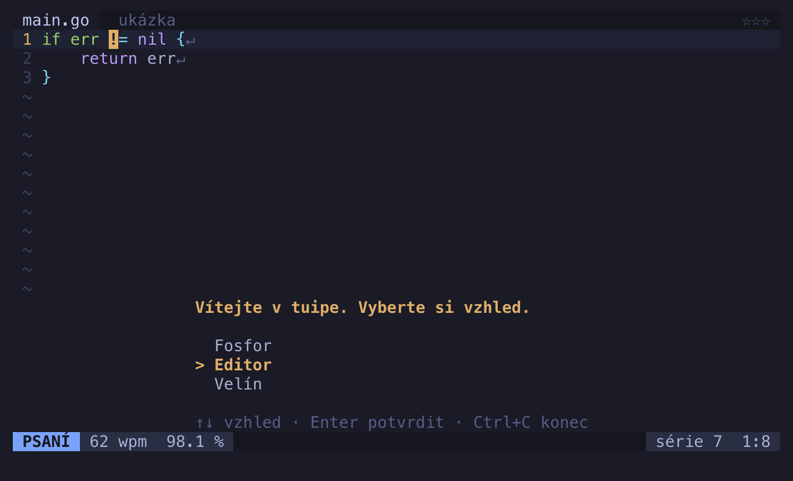
Kontrola klávesnice
tuipe vás požádá o tři znaky: ě, { a @. Ke každému ukáže, jak se píše. Podle výsledku pozná, co se děje:
- Když první znak nesedí, tuipe vás upozorní a ukáže, co přišlo. Může to být překlep, takže znak prostě napište znovu. Pokud klávesa opravdu dává tohle, potvrďte to klávesou Enter a otevře se výběr rozložení.
- Když terminál pošle Alt s písmenem, ukáže se návod na nastavení Option. Po změně zkusíte znak znovu klávesou Enter.
- Když nesedí
{nebo@, nevadí to. Tyto klávesy se učí později.
Kontrolu přeskočíte klávesou Esc, jiné rozložení vyberete klávesou Tab.
Kde začínáte?
Dvě možnosti. Začínám od nuly ukáže domovskou pozici rukou a pustí vás na úvodní obrazovku. Vstupní pohovor trvá asi 4 minuty a přeskočí, co už umíte.
Vstupní pohovor
Pohovor má šest fází. V každé napíšete krátký text, bez nápovědy. Text ukáže celou skupinu: všechna malá písmena s diakritikou, všechny číslice a všechny symboly se Shiftem i s Option, včetně ° ˇ ¨ §, a k tomu pět velkých písmen. Fáze kódu jsou dva řádky skutečného kódu. Fáze je splněná při přesnosti aspoň 90 % a rychlosti z tabulky. Nesplněná fáze pohovor ukončí a nic zlého se neděje.
| Fáze | Rychlost | Splnění dokončí kapitoly | Hodnost |
|---|---|---|---|
| Písmena | 20 WPM | 0 až 4 | Junior |
| Diakritika | 15 WPM | 5 | Junior |
| Číslice | 12 WPM | 6 | Medior |
| Symboly se Shiftem | 12 WPM | 7 | Medior |
| Symboly s Option | 10 WPM | 8 až 10 | Senior |
| Skutečný kód | 12 WPM | 11 | Staff |
Fáze skončí i předčasně, když po nejméně 20 stiscích tvoří chyby přes čtvrtinu. Pohovor ukončíte sami klávesou Esc před každou fází.
Výsledek dostanete jako pracovní nabídku: hodnost a kapitolu, kde začínáte. Přeskočené kapitoly jsou hotové, ale bez hvězd, a jejich lekce zůstávají otevřené. Znaky z nich začínají jako jisté, nebo jako rozpracované, pokud vám v pohovoru dělaly potíže. Co jste ještě nenapsali, zařadí drilly přednostně. Symboly můžete cvičit hned, nabídka odkazuje na Trénink › Vybrané znaky.
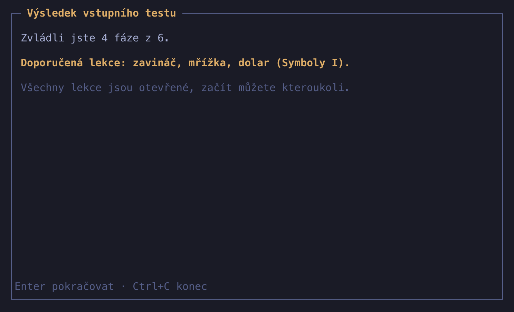
Pohovor můžete zopakovat v Nastavení položkou Znovu vstupní pohovor. Hodnost nikdy nesníží.
Jak funguje kolo
Kolo je jeden napsaný text. Všechny režimy se z kol skládají, liší se jen tím, jaká kola a v jakém pořadí vyberou.
Zastavení na chybě
Při špatné klávese se kurzor nepohne, dokud nenapíšete správný znak. Chyba se zapíše, znak zčervená a podtržení na něm zůstane. Backspace není potřeba a nic nedělá. Odnaučíte se tak opravovat a naučíte se rovnou trefovat.
Enter a odsazení
Konec řádku značí symbol ↵ a píše se klávesou Enter. Odsazení dalšího řádku tuipe přeskočí samo, jako by to udělal editor, takže mezery na začátku řádku nepíšete.
Čas a pauza
Čas běží od prvního stisku. Kolo se pozastaví samo, když okno terminálu ztratí fokus. V terminálech, které změnu fokusu nehlásí, se kolo pozastaví po 5 sekundách bez stisku. Takovou pauzu ukončí první další klávesa, která se zároveň počítá jako vstup.
Klávesa Esc otevře nabídku pauzy s položkami pokračovat, začít znovu a odejít. Ctrl+R začne kolo znovu rovnou. Čas pauzy se nikdy nezapočítá. Kolo s pauzou se dopíše normálně a počítá se pro statistiky, hvězdy i uptime, jen se z něj nestane duch ani rekord. Nedopsané kolo není prohra: do historie se nezapíše, ale stisky z něj se do statistik znaků počítají.
Když zavřete aplikaci uprostřed lekce, další spuštění nabídne pokračuj: název lekce. Kolo pak začne od začátku.
Nápověda a jak mizí
Nápověda říká, co stisknout a kterým prstem. Třeba:
{ → levý Option + í (pravý prsteník)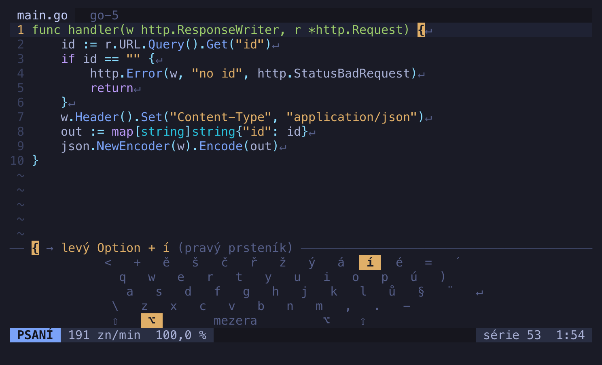
Kdy se ukáže, záleží na tom, jak dobře znak umíte. tuipe si u každého znaku vede rychlost a chybovost a podle nich ho řadí do čtyř stavů:
| Stav znaku | Jak se ho dosáhne | Nápověda |
|---|---|---|
| nový | méně než 10 stisků | hned |
| rozpracovaný | aspoň 10 stisků | po 0,8 s váhání |
| jistý | aspoň 30 stisků, chybovost pod 6 %, prodleva pod 600 ms | po 2 s váhání |
| automatický | aspoň 80 stisků, chybovost pod 2 %, prodleva pod 350 ms | ani při váhání ne |
Od stavu rozpracovaný výš se nápověda ukáže i při druhé chybě na stejném místě, nikdy při první. Jeden překlep vás tak stojí přesnost, ale ne třetí hvězdu. Výš se znak posune, jen když chybovost nepřesáhne 12 %. Může se i zhoršit: klesne, když chybovost přeroste 12 %, ale nejvýš o stupeň za kolo, a jeden překlep na znaku, který píšete poprvé, ho neshodí. Znak, který jste dva týdny nepsali, se pro nápovědu čte o stupeň níž, za každé další dva týdny o další.
Mapa klávesnice a panel Další znak jsou také nápověda a řídí se stejnými pravidly. Mimo nápovědu jsou tyto plochy prázdné nebo ukazují neutrální přehled, takže neprozradí, co přijde.
Hvězdy
Každá lekce má tři hvězdy. Každá hvězda chce rychlost i přesnost zároveň:
| Hvězda | Přesnost | Rychlost | Nápověda |
|---|---|---|---|
| ★ | aspoň 92 % | první cíl lekce | smí být |
| ★★ | aspoň 96 % | druhý cíl lekce | smí být |
| ★★★ | aspoň 98 % | třetí cíl lekce | žádná |
Cíle rychlosti se liší podle lekce, protože lekci symbolů nejde měřit jako lekci písmen. Například „Prostředníky“ chtějí 10, 15 a 20 WPM, „Velká písmena v tempu“ 20, 28 a 36 WPM. Každá ukázaná nápověda se počítá jako použitá a na výsledku to tuipe napíše: nápověda použita: třetí hvězda není možná. U lekce se pamatuje nejlepší výsledek, takže hvězdu nikdy neztratíte. Na výsledku kola ukazují hvězdy jen lekce. Po drillu, kódu, test-outu ani incidentu je neuvidíte, protože by je nikdo nedržel. Jen git log ukazuje u každého kola, jak dopadlo.
Výsledek a skóre
Po kole vidíte výsledek jako git diff proti nejlepšímu předchozímu pokusu na stejném textu. U textu, který píšete poprvé, je místo HEAD~1 nahoře /dev/null.
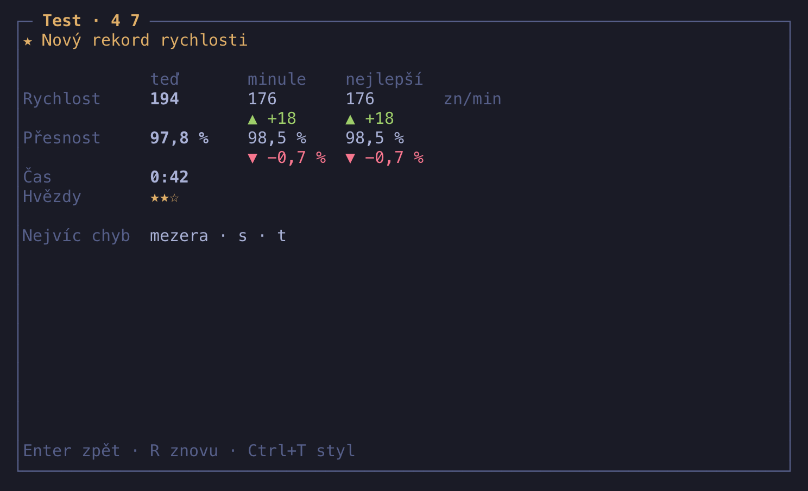
- WPM je počet správně napsaných znaků děleno pěti a děleno minutami.
- Přesnost je podíl znaků napsaných správně napoprvé.
- Skóre je
WPM × přesnost⁴. 60 WPM při 98 % dá skóre 55, při 90 % jen 39. Přesnost tu váží mnohem víc než rychlost. Skóre uvidíte v rekordech.
Duch HEAD~1
Duch je druhý kurzor, který běží textem s vámi. Vidíte ho jako barevné pole v textu a váš náskok nebo ztrátu v sekundách: +1.3 s znamená, že vedete, -0.3 s, že prohráváte.
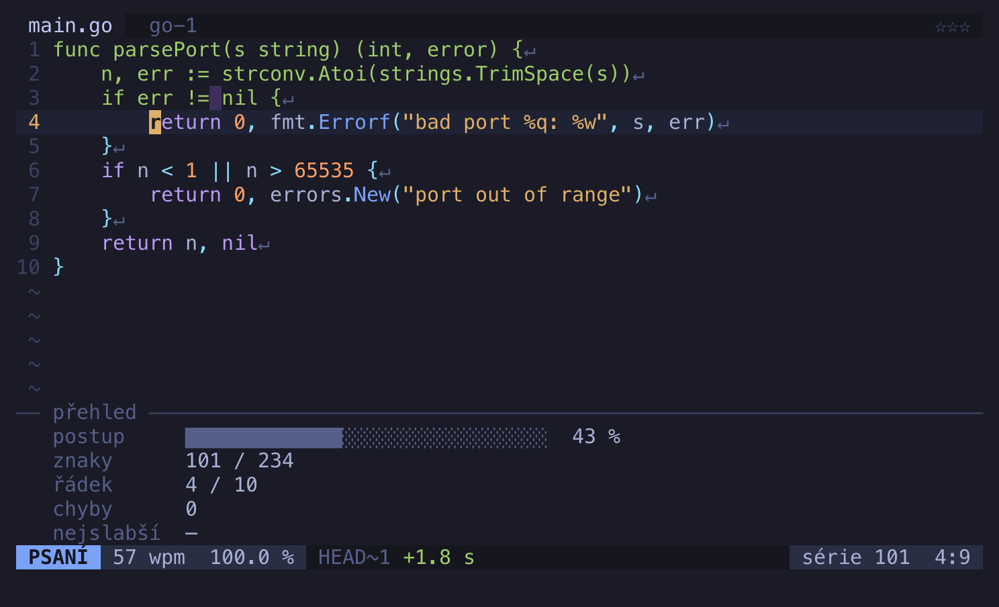
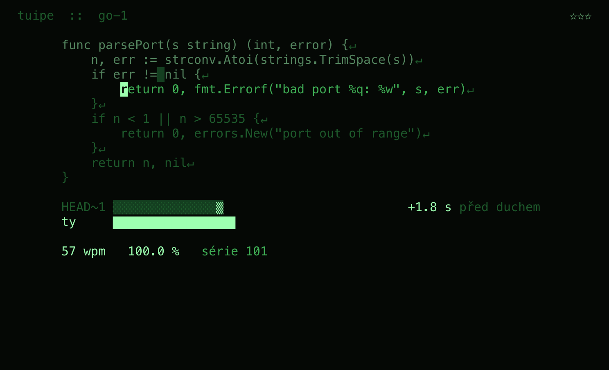
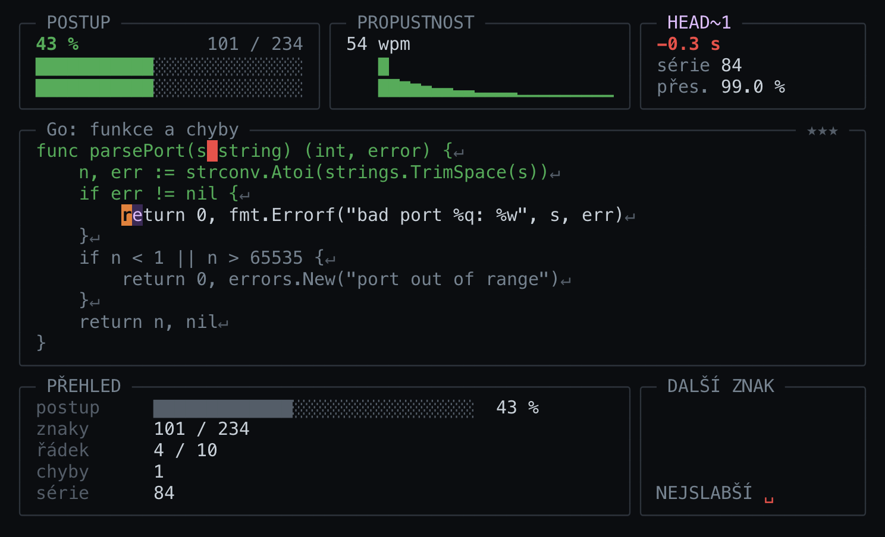
Jsou dva druhy:
- Záznam. Lekce, úryvky kódu a incidenty mají pevný text, takže duch přesně přehrává váš nejlepší pokus na tomto textu.
- Duch tempa. Generované drilly nemají starší pokus. Duch se proto spočítá z vaší průměrné rychlosti na jednotlivých znacích a je o 3 % rychlejší, aby vás popoháněl. U znaků, kde žádná data nejsou, počítá s 400 ms na znak. Dokud nemáte napsaných aspoň 20 znaků, duch tempa se nezobrazí, protože by závodil s odhadem.
Nový pokus ducha nahradí, jen když má vyšší skóre, takže rychlé a odbyté kolo se duchem nestane. Nestane se jím ani kolo s pauzou nebo prohraný incident. Když na textu žádného ducha nemáte, závod se nezobrazí. Vstupní pohovor a test-out ducha nemají.
Režimy
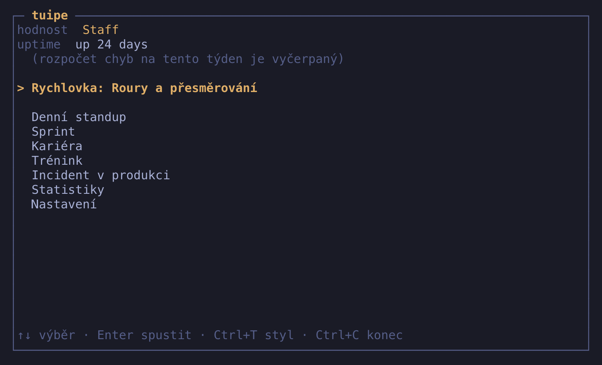
Rychlovka
První položka úvodní obrazovky a to, co spustíte klávesou Enter hned po startu. tuipe vybere nejužitečnější kolo. Zhruba v 60 % případů je to další lekce kariéry, jinak drill na vaše slabá místa. Dokud o nich nic neví, je to vždycky lekce. Od kapitoly 11 se přidává i skutečný kód. Každé osmé kolo je incident, pokud je nějaký k dispozici. Když máte v kapitole všechny lekce s hvězdou a čeká vás závěrečný incident, Rychlovka nabídne ten a jmenuje ho. Po prohře přijde jeden drill na nejslabší znaky a pak incident znovu.
Každý drill trvá při vašem tempu asi minutu a ze svých pěti hlavních znaků dva vyhrazuje těm, které jste nejdéle nepsali. Znaky, které jste ještě nepsali vůbec, jdou první. Vzácné symboly se tak z tréninku neztratí. Slabé dvojice znaků se do drillu dostanou taky.
Na obrazovce výsledku Enter spustí další kolo a R stejný text znovu. U lekce a kódu poběžíte proti svému nejlepšímu pokusu, u drillu proti vlastnímu tempu, a hvězda z lekce se tím neztratí. Ve Standupu a Sprintu R nefunguje, protože mají pevný plán, stejně jako po splněném test-outu. Krátká pauza a dlouhé sezení tak mají stejný průběh.
Denní standup
Pět drillů za sebou na vaše nejslabší a nejdéle nepsané znaky, každý zhruba minutu, dohromady asi pět minut. Průběh vidíte jako Standup 2/5. Po dokončení má položka v nabídce poznámku (hotovo). Znovu ho spustit můžete, ale cíl na dnešek je splněný.
Sprint a Retro
Plánované sezení na 10, 20 nebo 30 minut. Začíná rozehřátím na slabých znacích, pokračuje nedokončenými lekcemi, od kapitoly 11 i kódem, pak přijde další drill a na závěr incident. Minuty se počítají jen z aktivního psaní, takže pauza Sprint prodlouží. Průběh vidíte jako Sprint 3:12 / 20:00. Když naplánovaná kola skončí dřív, pokračují další drilly na slabá místa, dokud minuty nevyprší. Když čas vyprší, další kolo je rovnou závěrečné.
Ze Sprintu můžete kdykoli odejít. Ještě týž den u něj v nabídce najdete (pokračovat) a naváže se tam, kde jste skončili. Řádek Ukončit sprint pod ním Sprint rovnou uzavře a ukáže Retro z toho, co jste stihli. Další den se Sprint uzavře sám.
Retro porovná průměrnou rychlost a přesnost se sedmi dny před Sprintem a vypíše až tři znaky, které se nejvíc zlepšily a zhoršily. Počítají se změny chybovosti aspoň o 2 procentní body.
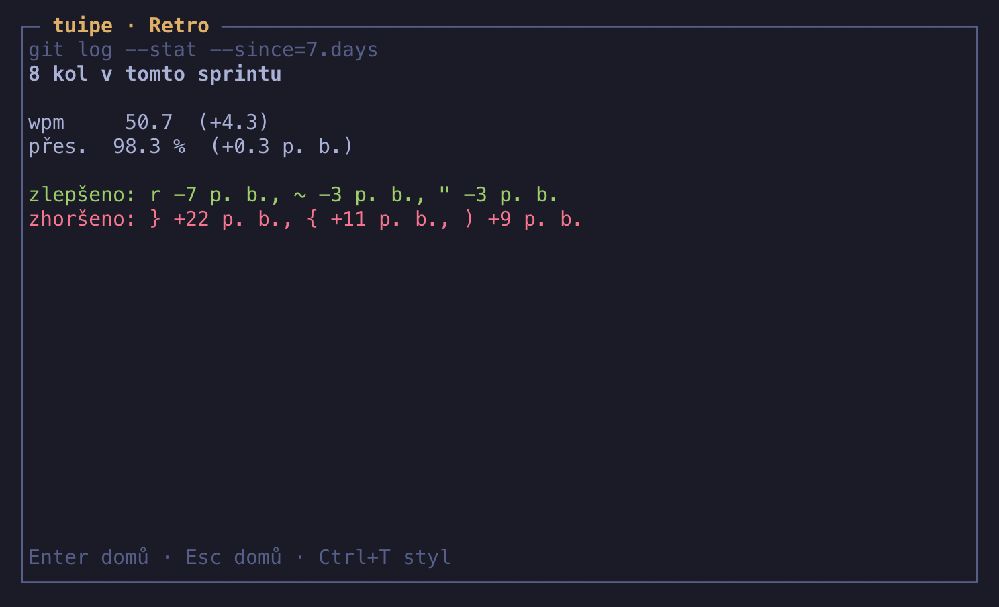
Incident v produkci
Časovaný scénář o několika krocích: diagnostikujte v shellu, opravte kód, nasaďte. Nad textem běží příběh a kroky se oddělují klávesou Enter. Incidentů je 18. Dvanáct uzavírá kapitoly 1 až 12, šest je navíc k volnému hraní. V nabídce vidíte všechny z odemčených kapitol a u každého nejtěžší závažnost, kterou jste vyhráli, třeba [SEV2].
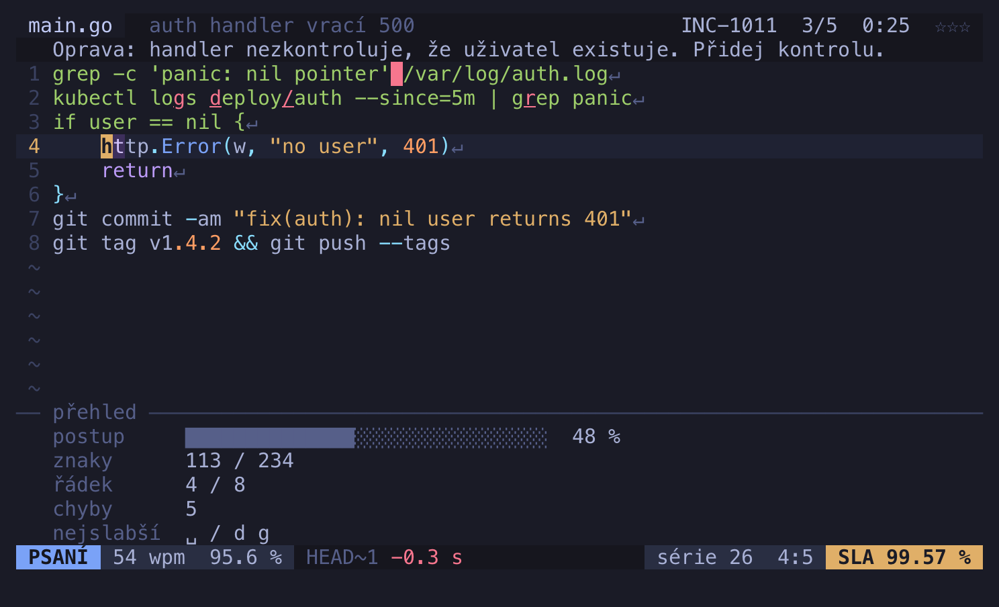
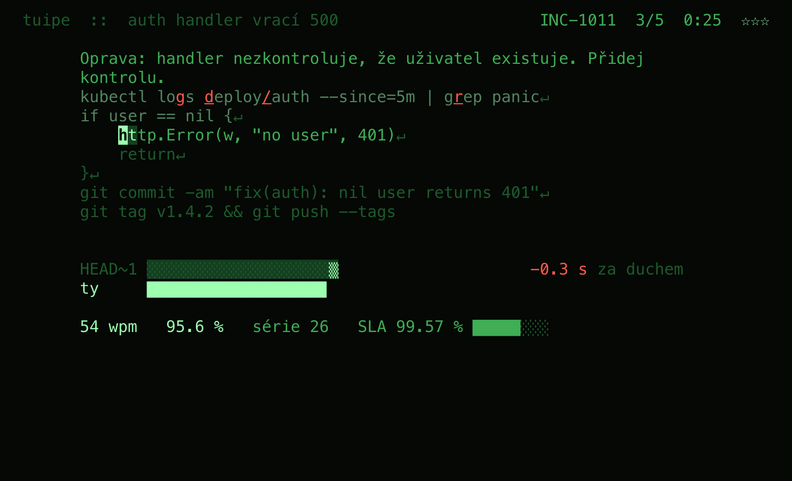
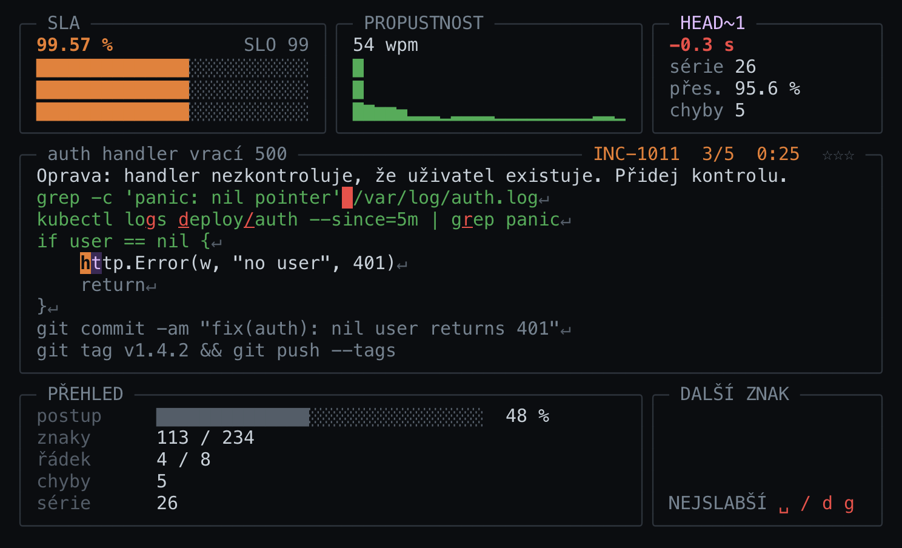
SLA začíná na 100 % a hranice SLO je 99 %. Hoří s časem a každá chyba ubere další kus, v krátkém incidentu 5 % rozpočtu, v dlouhém méně. Když SLA klesne na SLO, je to výpadek a incident je prohraný. Na začátku každého dalšího kroku měřidlo chvíli počká, abyste si přečetli zadání. Čekání ukončí první stisk.
Závažnost nastavuje, jak rychle hoří. Vychází z vašeho základního tempa, což je medián posledních 20 kol, nejméně 15 WPM. Když píšete přesně tempem závažnosti, spálíte polovinu rozpočtu. Druhou polovinu si berou chyby, takže při běžném tempu a přesnosti 92 %, tedy na jednu hvězdu, přežijete na SEV3 i nejdelší incident, jen tak tak.
| Závažnost | Požadované tempo | Situace |
|---|---|---|
| SEV3 | vaše běžné | nikdo nevolá |
| SEV2 | o 5 % rychleji | někdo už píše do chatu |
| SEV1 | o 15 % rychleji | volá ředitel |
Výhra ukáže MTTR, tedy čas do vyřešení, zbývající SLA a srovnání s minulým řešením. Prohra skončí postmortemem bez hledání viníka: vypíše znaky, které napáchaly největší škodu, i s tím, jak se píšou. Klávesa d z nich rovnou udělá drill.
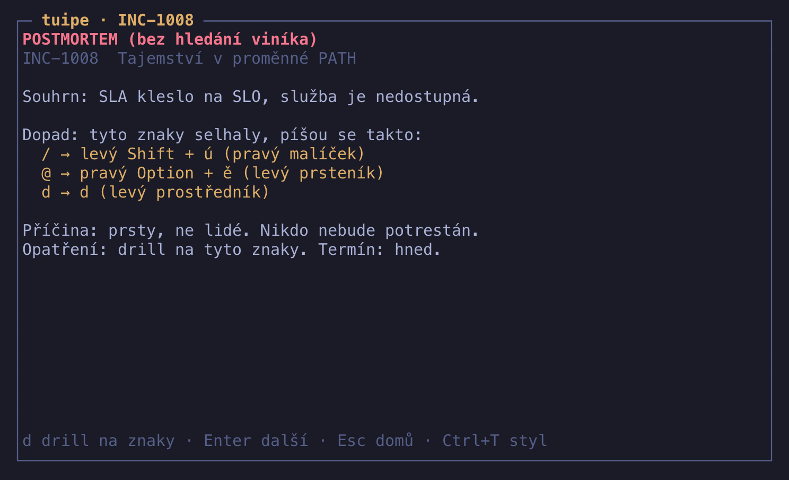
Kariéra
Mapa celé cesty: 13 kapitol, 102 lekcí a šest hodností. Hodnost získáte dokončením kapitoly a nikdy o ni nepřijdete.
| Kapitola | Co trénuje | Hodnost |
|---|---|---|
| 0 Nástup | ruce na klávesách, f a j | Intern |
| 1 Domovská řada | a s d f j k l ů, mezera, g h | Intern |
| 2 Horní řada | q w e r t y u i o p | Intern |
| 3 Dolní řada | z x c v b n m , . | Intern |
| 4 Velká písmena a interpunkce | Shift, - _ : ? ! | Junior |
| 5 Česká diakritika | ě š č ř ž ý á í é ú, mrtvé klávesy, velká písmena | Junior |
| 6 Číslice | 0 až 9 se Shiftem | Medior |
| 7 Symboly se Shiftem | + = % / ( ) " ` | Medior |
| 8 Symboly s Option I | @ # $ { } [ ] ; ' | Senior |
| 9 Symboly s Option II | ~ ^ & * < > \ | | Senior |
| 10 Vzácné a mrtvé klávesy | ° ˇ ¨ § | Senior |
| 11 Skutečný kód | Go, Python, JavaScript, TypeScript, shell, SQL, regulární výrazy | Staff |
| 12 Všechno dohromady | všechno, bez nápovědy | Principal |
Kapitola je hotová, když mají všechny její lekce aspoň jednu hvězdu a vyhrajete její závěrečný incident na libovolnou závažnost. Výjimkou je kapitola 0, ta žádný incident nemá. Když má kapitola všechny lekce s hvězdou, objeví se v seznamu Kariéry pod nimi řádek s dlužným incidentem. Nabídne ho i Rychlovka a najdete ho také v nabídce Incident v produkci. Výhra před dokončením lekcí se zapíše a kapitolu uzavře hvězda u poslední z nich, výsledek to oznámí.
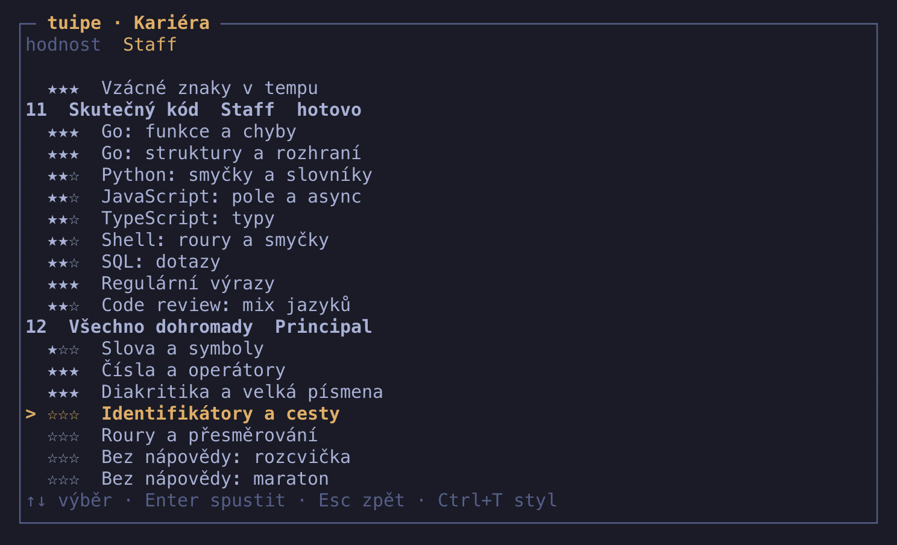
Enter na lekci ji spustí a po kole se vrátíte do seznamu, takže chybějící hvězdu můžete dohánět, jak dlouho chcete. Zamčená kapitola ukazuje jen test-out, odemčená ho má pod lekcemi. Kapitola 0 a hotové kapitoly test-out nemají.
Test-out je jedno kolo bez nápovědy, které musíte zvládnout aspoň na ★★. Text obsahuje všechny znaky kapitoly a vzorek z každé kapitoly před ní. Test-out kapitoly 11 je skutečný kód, test-out kapitoly 12 je směs plná symbolů ze všech kapitol. Tyhle dva jsou delší než ostatní. Úspěch dokončí tuto kapitolu i všechny nedokončené před ní, bez hvězd. Když by test-out uzavřel víc kapitol, řádek to řekne předem, třeba test-out: uzavře 5 kapitol naráz, a výsledek napíše, kolik jich uzavřel. Neúspěch nic nezmění.
Trénink
Když chcete trénovat něco konkrétního, vyberte si sami:
- Kapitola vygeneruje drill na znaky, které kapitola přináší.
- Lekce pustí kteroukoli lekci z odemčených kapitol.
- Jazyk vybere náhodný úryvek v jazyce
go,python,js,ts,shell,sqlneboregex. - Vybrané znaky vygenerují drill na znaky, které napíšete, nejvýše na 12. Stačí je napsat, klidně s Option. Backspace maže, Enter spouští.
Statistiky
Čtyři záložky. Přepínáte je šipkami vlevo a vpravo, nebo klávesou Tab dopředu a Shift+Tab zpět.
git log
Každé dokončené kolo je jeden řádek. Řádky jsou seskupené po dnech, nejnovější nahoře: krátký hash, rychlost, přesnost, hvězdy, rozdíl proti duchovi a co jste psali. Prohraný incident má poznámku prohráno.
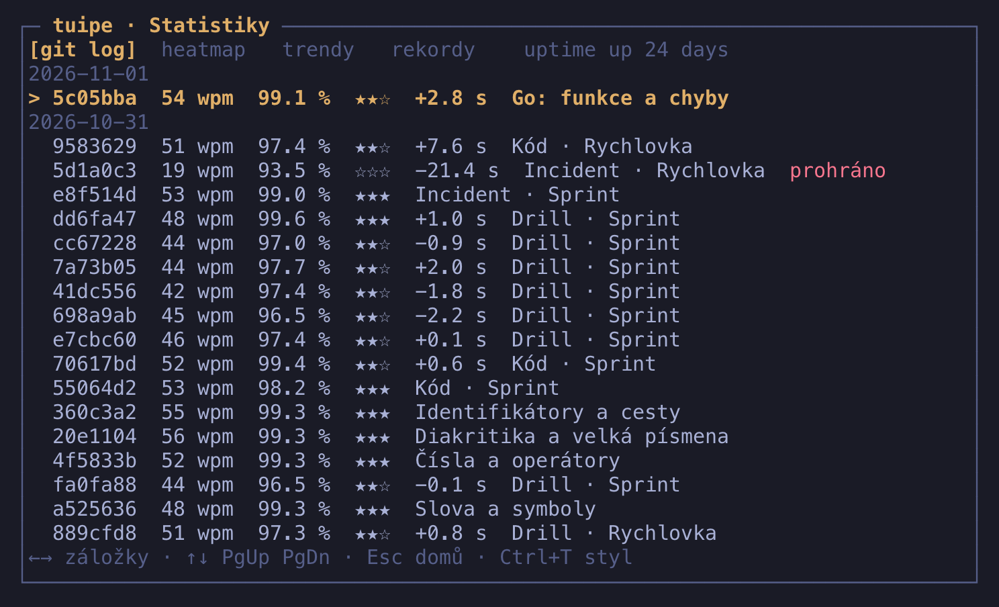
heatmap
Klávesnice obarvená podle slabosti: čím červenější klávesa, tím hůř. Slabost kombinuje chybovost a prodlevu a počítá se u znaků s aspoň 5 stisky. Pod mapou je nejslabší prst a nejslabší znaky i s tím, jak se píšou.
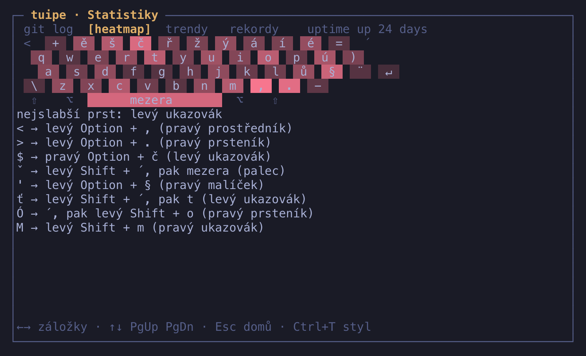
trendy
Rychlost a přesnost v čase jako malé grafy, jeden sloupek za aktivní den, nejvýš za posledních 30 aktivních dní. Za každý den se bere medián. Řádek celkem obsahuje všechna kola kromě vstupního pohovoru a prohrané incidenty se nepočítají do rychlosti. Skupiny písmena, diakritika, čísla, Shift, Option a kód se počítají z lekcí, podle kapitoly, do které lekce patří. Do skupiny kód patří kapitoly 11 a 12. Číslo vpravo je poslední hodnota.
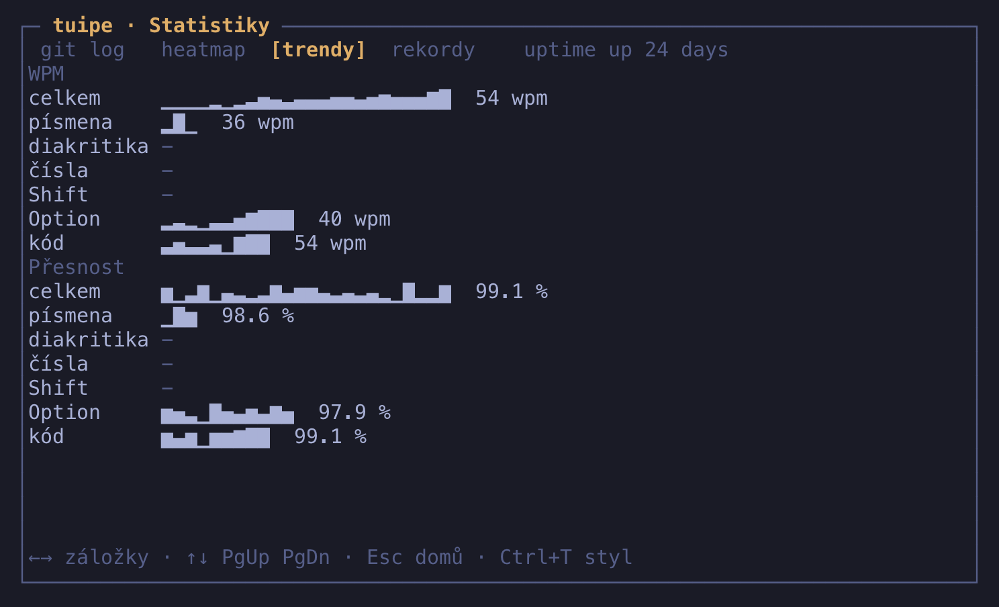
rekordy
Nejlepší kolo podle skóre v každé kategorii: Rychlovka, Lekce, Kód, Incident, Standup a Sprint. Kola s pauzou a prohrané incidenty se nepočítají.
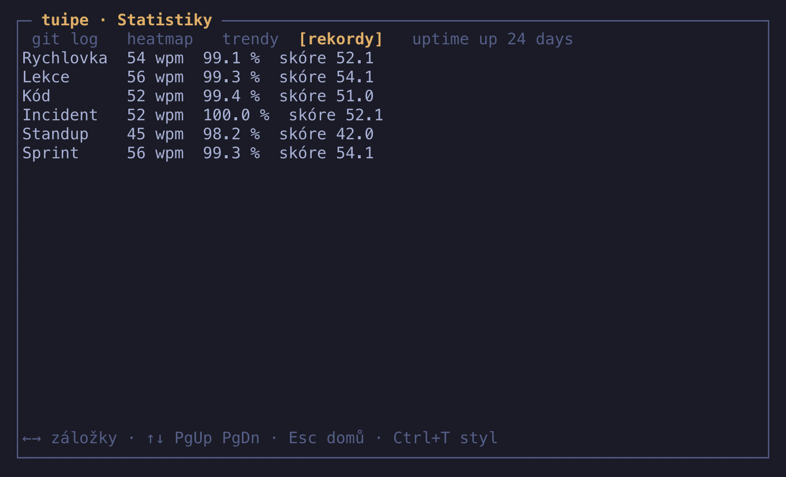
uptime a rozpočet chyb
Série po sobě jdoucích dnů se jmenuje uptime a čte se jako u serveru: up 24 days. Den se počítá, když v něm dokončíte aspoň jedno kolo. Dnešek, dokud jste nepsali, sérii nepřeruší, jen se zatím nepočítá.
Jeden vynechaný den za kalendářní týden (pondělí až neděle) odpustí rozpočet chyb. Vynechaný den se do uptime nepřičte, ale série běží dál. Když je rozpočet na tento týden pryč, úvodní obrazovka napíše (rozpočet chyb na tento týden je vyčerpaný). Série se přetrhne po dvou vynechaných dnech za sebou nebo po druhém vynechaném dni v jednom týdnu.
Vzhled a velikost okna
Kolo a incident mají ve třech stylech opravdu tři různá rozložení. Ostatní obrazovky mají stejnou strukturu, jen se barvami a rámečky přizpůsobí stylu. Výchozí je Editor. Ctrl+T přepíná v pořadí Fosfor, Editor, Velín a funguje kdykoli, i uprostřed kola. Volba se hned uloží.
- Fosfor je monochromatický zelený monitor. Řádek, který píšete, stojí na místě a text se pod ním posouvá. Pod ním je závod s duchem. Mapa klávesnice se ukáže jen při nápovědě.
- Editor vypadá jako Neovim: zvýraznění syntaxe, čísla řádků, stavový řádek a dole přehled, který při nápovědě vystřídá mapa klávesnice.
- Velín je hustý dashboard ve stylu
htop: postup nebo SLA, propustnost, náskok před duchem, přehled a panel Další znak.
Ideální okno je polovina obrazovky vedle jiné práce, kolem 80 × 45, stejně dobře ale poslouží běžných 80 × 24.
| Velikost okna | Co uvidíte |
|---|---|
| od 60 × 18 | plné rozložení stylu |
| menší | kolo se zúží na pruh: hlavní čísla, text a jednořádková nápověda bez mapy |
| pod 40 × 8 | kolo se pozastaví a tuipe požádá o víc místa |
Změna velikosti během kola nic nepokazí, text se jen přeskládá.
Klávesové zkratky
Během kola je každá tisknutelná klávesa vstup, proto se ovládání drží kláves Ctrl a Esc.
| Kde | Klávesa | Co udělá |
|---|---|---|
| Všude | Ctrl+T | další styl |
| Ctrl+C | konec aplikace | |
| První spuštění: styl a rozcestník „Kde začínáte?“ | ↑ ↓ nebo k j | výběr |
| Enter | potvrdit | |
| První spuštění: kontrola klávesnice | Tab | otevřít výběr rozložení |
| Enter | po špatném prvním znaku potvrdit, že ho klávesa opravdu dává | |
| Esc | kontrolu přeskočit | |
| První spuštění: nápověda k Option | Enter | zkusit znak znovu |
| Esc | kontrolu přeskočit | |
| První spuštění: výběr rozložení | ↑ ↓ nebo k j | výběr |
| Enter | potvrdit rozložení a zkontrolovat znovu | |
| Esc | kontrolu přeskočit | |
| První spuštění: domovská pozice | ↑ ↓, k j, PgUp PgDn | posun textu |
| Enter | pokračovat | |
| Úvodní obrazovka | ↑ ↓ nebo k j | výběr |
| Enter | spustit | |
| Kolo | Esc | pauza |
| Ctrl+R | začít kolo znovu | |
| Enter | konec řádku v textu | |
| Pauza | ↑ ↓, Enter | výběr a potvrzení |
| Esc | pokračovat | |
| Výsledek kola | Enter | další kolo |
| R | zopakovat kolo | |
| Esc | domů | |
| Výhra nebo postmortem incidentu | Enter, Esc | další, domů (obrazovka prvních 0,7 s klávesy ignoruje) |
| d | v postmortemu drill na znaky, které selhaly | |
| Seznamy (Kariéra, Trénink, Incident, Sprint) | ↑ ↓ nebo k j | výběr |
| Enter, Esc | spustit, zpět | |
| Vybrané znaky | Backspace | smazat znak |
| Enter | spustit drill | |
| Esc | zpět do nabídky Trénink | |
| Vstupní pohovor a pracovní nabídka | Enter | začít fázi nebo pokračovat z nabídky |
| Esc | ukončit pohovor (před fází) | |
| Statistiky | →, l nebo Tab | další záložka |
| ←, h nebo Shift+Tab | předchozí záložka | |
| ↑ ↓, k j, PgUp PgDn | posun v git logu | |
| Esc | domů | |
| Retro | Enter, Esc | domů |
| Nastavení | ↑ ↓ nebo k j | výběr |
| Enter, ← → nebo h l | změnit hodnotu | |
| Esc | domů |
Česká klávesnice
Všechno v této kapitole platí pro rozložení macOS Czech QWERTY na fyzické klávesnici ISO. Ve vstupních zdrojích macOS se jmenuje Czech – QWERTY a v českém systému zřejmě Česká – QWERTY. Pokud takový název nenajdete, hledejte položku s dovětkem QWERTY. Na české klávesnici QWERTZ je část kláves jinde.
Horní řada je naruby
Číslice jsou za Shiftem: bez něj píšete + ě š č ř ž ý á í é, se Shiftem 1 2 3 4 5 6 7 8 9 0. Každé číslo v kódu tak stojí stisk navíc. Symboly s Option jsou ve stejné řadě: ` @ # $ ~ ^ & * { }.
Kterou rukou modifikátor
Shift nebo Option stiskne ruka, která nepíše samotnou klávesu. Proto nápověda říká levý Option + í: í je pod pravým prsteníkem, takže Option drží levá. tuipe to nevidí a poradit může jen nápovědou, ale s tímto návykem budete rychlejší.
Mrtvé klávesy
Mrtvá klávesa sama nic nenapíše. Čeká na další stisk a teprve spolu dají znak. Terminál přitom vidí jen výsledek, proto se čas znaku měří za celou sekvenci.
Hlavní mrtvá klávesa leží vpravo od =, na mapě klávesnice je jako ´. Bez Shiftu dává čárku, se Shiftem háček. Další je ¨ vpravo od §.
| Znak | Jak se píše |
|---|---|
ď | levý Shift + ´, pak d |
ť | levý Shift + ´, pak t |
ň | levý Shift + ´, pak n |
ó | ´, pak o |
Č | levý Shift + ´, pak pravý Shift + c |
Ů | levý Shift + ´, pak levý Shift + u |
Á | ´, pak pravý Shift + a |
ˇ | levý Shift + ´, pak mezera |
¨ | ¨, pak mezera |
° | levý Option + =, pak mezera |
Velká písmena s diakritikou se tedy píšou přes mrtvou klávesu, protože Shift na horní řadě dává číslice.
Kde co leží
ú/[jsou na klávese vpravo odp,)(]hned za ní.ů";jsou na klávese vpravo odl,§!'hned za ní.\a|jsou mezi levým Shiftem az.<a>se učí s Option na čárce a tečce, blízko domovské pozice.
Programátorské symboly
Tabulka ukazuje přesně to, co vám řekne nápověda v aplikaci, včetně prstu. Kde je jen znak, stačí jeho vlastní klávesa.
| Znak | Jak se píše | Prst |
|---|---|---|
{ | levý Option + í | pravý prsteník |
} | levý Option + é | pravý malíček |
[ | levý Option + ú | pravý malíček |
] | levý Option + ) | pravý malíček |
( | levý Shift + ) | pravý malíček |
) | ) | pravý malíček |
< | levý Option + , | pravý prostředník |
> | levý Option + . | pravý prsteník |
@ | pravý Option + ě | levý prsteník |
# | pravý Option + š | levý prostředník |
$ | pravý Option + č | levý ukazovák |
~ | pravý Option + ř | levý ukazovák |
^ | pravý Option + ž | levý ukazovák |
& | levý Option + ý | pravý ukazovák |
* | levý Option + á | pravý prostředník |
; | levý Option + ů | pravý malíček |
' | levý Option + § | pravý malíček |
" | levý Shift + ů | pravý malíček |
` | levý Shift + ¨ | pravý malíček |
\ | \ | levý malíček |
| | pravý Shift + \ | levý malíček |
/ | levý Shift + ú | pravý malíček |
% | levý Shift + = | pravý malíček |
+ | + | levý malíček |
= | = | pravý malíček |
- | - | pravý malíček |
_ | levý Shift + - | pravý malíček |
. | . | pravý prsteník |
, | , | pravý prostředník |
: | levý Shift + . | pravý prsteník |
? | levý Shift + , | pravý prostředník |
! | levý Shift + § | pravý malíček |
§ | § | pravý malíček |
Některé znaky jdou napsat i jinak a tuipe učí jen jednu cestu. Protože terminál vidí jen výsledek, během psaní platí i ty ostatní: < a se Shiftem > z klávesy vlevo od +, ' jako ´ a mezera, ` jako Option + +.
Data a konfigurace
Všechno leží u vás, v obyčejných souborech. tuipe nemá účty ani telemetrii. Na síť jde jen tuipe upgrade a denní kontrola nové verze.
| Soubor | Obsah |
|---|---|
~/.config/ | nastavení |
~/.config/ | vaše rozložení klávesnice |
~/.local/ | znalost znaků, hvězdy, dokončené kapitoly |
~/.local/ | historie kol |
~/.local/ | jeden soubor na ducha |
Na Windows jsou tyto složky ve vašem uživatelském adresáři, tedy %USERPROFILE%\.config\tuipe a %USERPROFILE%\.local\share\tuipe. Proměnné XDG_CONFIG_HOME a XDG_DATA_HOME platí na všech systémech. Zálohu uděláte zkopírováním složek.
Konfigurace má tři hodnoty a běžně ji měníte přímo v aplikaci, v Nastavení:
style = "editor"
layout = "macos-czech-qwerty"
update_check = truestyle může být fosfor, editor nebo velin. Statistiky se vedou zvlášť pro každé rozložení. Poškozený soubor aplikaci neshodí: tuipe ho odloží s koncovkou .corrupt-1, začne bez něj a na úvodní obrazovce řekne, co se stalo a kde odložený soubor leží. Hlášení zmizí po prvním stisku klávesy.
Aktualizace
tuipe upgradeStáhne nejnovější vydání z GitHubu, ověří kontrolní součet a vymění program. Když stažení nebo kontrola selže, nainstalovaná verze zůstane beze změny.
tuipe upgrade --checkJen zjistí, jestli je dostupná novější verze, a nic nemění. Nainstalovanou verzi vypíše tuipe version.
Na novou verzi vás upozorní i tichý řádek na úvodní obrazovce. Kontrola běží nejvýš jednou denně na pozadí a start ani psaní nezdržuje. Vypnete ji v Nastavení položkou Kontrola aktualizací. Program z go install se tímto příkazem aktualizovat nedá, napíše vám, ať go install spustíte znovu.
Začít znovu
Příkaz tuipe reset vrátí aplikaci do výchozího stavu. Vždy musíte říct, co se má smazat:
| Příkaz | Co smaže |
|---|---|
tuipe reset --score | znalost znaků, hvězdy, dokončené kapitoly, historii kol a duchy |
tuipe reset --settings | nastavení a vaše rozložení klávesnice |
tuipe reset --all | obojí, jako by tuipe běžel poprvé |
Příkaz nejdřív vypíše, co přesně smaže, a zeptá se, jestli si jste jistí. Smaže to, až když napíšete ano a stisknete Enter. Jiná odpověď nic nezmění. Smazaná data nejde vrátit. Když tuipe běží v jiném okně, příkaz odmítne, dokud ho nezavřete. Ostatních souborů ve složkách si nevšímá.
Odinstalace
Na macOS a Linuxu smažte program a pak, pokud chcete, i data:
rm ~/.local/bin/tuipe
rm -rf ~/.config/tuipe ~/.local/share/tuipeNa Windows v PowerShellu:
Remove-Item -Recurse -Force "$env:LOCALAPPDATA\tuipe"
Remove-Item -Recurse -Force "$HOME\.config\tuipe", "$HOME\.local\share\tuipe"Složku %LOCALAPPDATA%\tuipe\bin pak ještě odeberte z uživatelské proměnné Path v nastavení proměnných prostředí. Pokud jste instalovali jinam nebo přes go install, smažte program tam.
Časté potíže
- Nejde napsat { ani jiné znaky s Option
- Když tuipe během kola napíše
Option je Alta volbu vašeho terminálu, třebaOption je Alt, nastavte: macos-option-as-alt = false, terminál posílá Alt místo znaku. Pomůže nastavení Option. Po změně terminál restartujte. - Místo { se píše něco jiného
- Zkontrolujte, že je v macOS aktivní vstupní zdroj
Czech – QWERTY(v českém systému zřejměČeská – QWERTY), ne varianta bez QWERTY, která je QWERTZ. tuipe vstupní zdroj nepřepíná a v základu zná jen rozložení Czech QWERTY. - { jde, ale @ ne (iTerm2)
- Levý a pravý Option se v iTerm2 nastavují zvlášť a
@se píše pravým. NastavteRight Option key = Normal. - Stisknu ´ a nic se nestane
- To je správně, je to mrtvá klávesa. Znak vznikne až po dalším stisku.
- Po instalaci command not found: tuipe
- Složka
~/.local/binnení naPATH. Instalační skript vypsal řádek, který máte přidat do souboru svého shellu. Pro zsh patří do~/.zshrctento řádek:export PATH="$HOME/.local/bin:$PATH". Pak otevřete nový terminál. - tuipe už běží v jiném okně
- tuipe drží zámek na svá data, aby se dvě kopie nepoškodily. Zavřete druhé okno a zkuste to znovu.
- Data uložila novější verze tuipe
- Data jsou z novější verze než program. Spusťte
tuipe upgrade. - Potřebuji víc místa
- Okno je menší než 40 × 8. Zvětšete ho, kolo mezitím čeká.
- Proč nemám třetí hvězdu?
- Třetí hvězda chce přesnost aspoň 98 %, třetí cíl rychlosti a kolo bez jediné nápovědy. Pokud se nápověda ukázala, i kdyby jen na chvíli, výsledek napíše
nápověda použita: třetí hvězda není možná. - Kolo se samo pozastavilo
- Okno ztratilo fokus. Stačí se vrátit a stisknout další klávesu. Čas pauzy se nepočítá, jen se kolo nestane duchem ani rekordem.
- Upgrade říká, že kopie nebyla nainstalována z vydání
- Program pochází z
go install. Aktualizujte ho znovu tímtéž příkazem, nebo použijte instalační skript. - Windows: Nepodařilo se nainstalovat
- Zavřete spuštěný tuipe a pusťte instalaci znovu.